Ten fixed places, requested at 128². Blue: simulated water. Gold: start. White: river origins in the after views. Settings below each preview disclose scale/size changes.
1. Grand Canyon Colorado 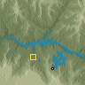
Request 96² → 96² Request 128² → 128² 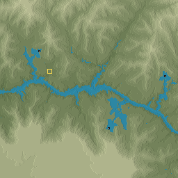
Request 256² → 256² 2. Colca Canyon 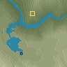
Request 96² → 96² 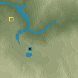
Request 128² → 128² 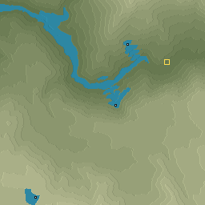
Request 256² → 256² 3. Verdon Gorge Request 96² → 96² 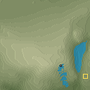
Request 128² → 128² 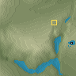
Request 256² → 96² 4. Tara Gorge 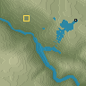
Request 96² → 96² 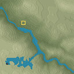
Request 128² → 128² 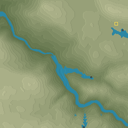
Request 256² → 256² 5. Mississippi birdfoot 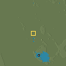
Request 96² → 96² Request 128² → 128² 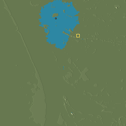
Request 256² → 256² 6. Danube delta 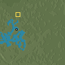
Request 96² → 96² 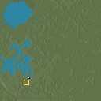
Request 128² → 128² 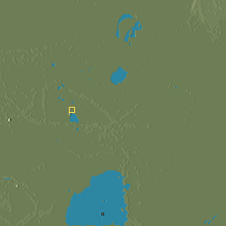
Request 256² → 256² 7. Waimakariri River 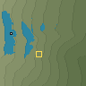
Request 96² → 96² 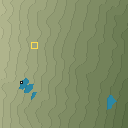
Request 128² → 128² 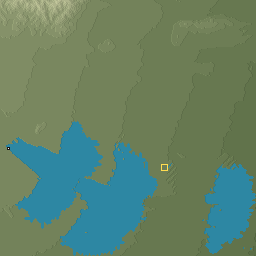
Request 256² → 256² 8. Tagliamento River 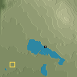
Request 96² → 96² 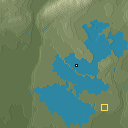
Request 128² → 128² 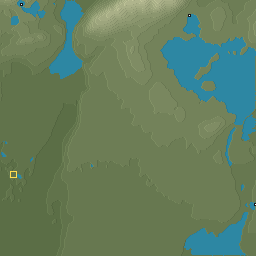
Request 256² → 256² 9. Goosenecks San Juan 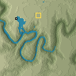
Request 96² → 96² 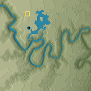
Request 128² → 128² 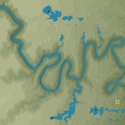
Request 256² → 256² 10. Mamore River 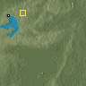
Request 96² → 96² Request 128² → 128² 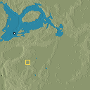
Request 256² → 128² 11. Death Valley Badwater fan 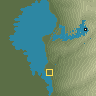
Request 96² → 96² 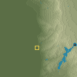
Request 128² → 128² 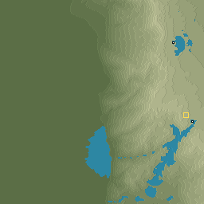
Request 256² → 256² 12. Taklimakan Kunlun fan Request 96² → 256² 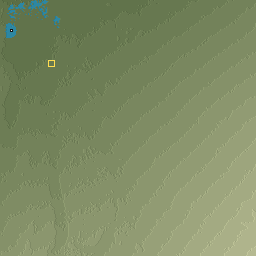
Request 128² → 256² 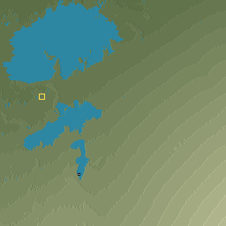
Request 256² → 256² 13. Crater Lake Request 96² → 128² Request 128² → 128² 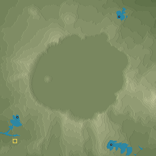
Request 256² → 256² 14. Ngorongoro 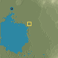
Request 96² → 96² Request 128² → 128² 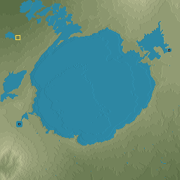
Request 256² → 256² 15. Mount Fuji 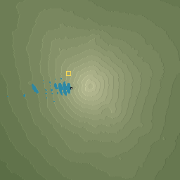
Request 96² → 256² Request 128² → 256² 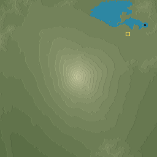
Request 256² → 256² 16. Mount Taranaki 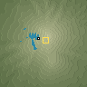
Request 96² → 96² 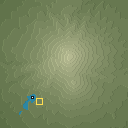
Request 128² → 128² 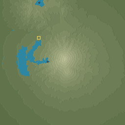
Request 256² → 256² 17. Monument Valley 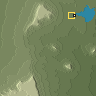
Request 96² → 96² 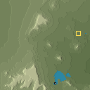
Request 128² → 128² 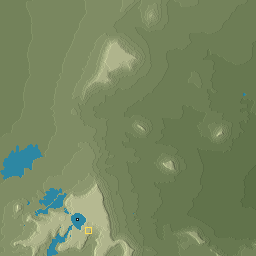
Request 256² → 256² 18. Capitol Reef 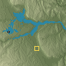
Request 96² → 96² 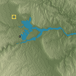
Request 128² → 128² 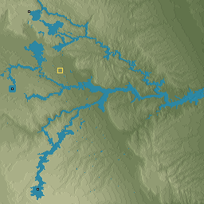
Request 256² → 256² 19. Badlands National Park 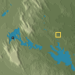
Request 96² → 96² 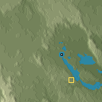
Request 128² → 128² 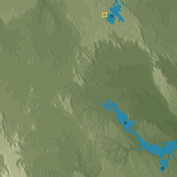
Request 256² → 256² 20. Bardenas Reales 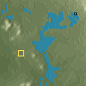
Request 96² → 96² 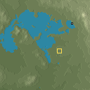
Request 128² → 128² Request 256² → 256² 21. Li River Yangshuo Request 96² → 128² Request 128² → 128² Request 256² → 256² 22. Phong Nha Request 96² → 96² Request 128² → 128² Request 256² → 256²
23. Geirangerfjord Request 96² → 96² Request 128² → 128² Request 256² → 256² 24. Milford Sound Request 96² → 96² Request 128² → 128² Request 256² → 256² 25. Yosemite Valley Request 96² → 96² Request 128² → 128² Request 256² → 256² 26. Lauterbrunnen Request 96² → 96² Request 128² → 128² Request 256² → 256²
27. Drakensberg Amphitheatre Request 96² → 96² Request 128² → 128² Request 256² → 256²
28. Bandiagara Request 96² → 128² Request 128² → 128² Request 256² → 256² 29. Colorado Plateau Request 96² → 96² Request 128² → 128² Request 256² → 256²
30. Tibetan Plateau Request 96² → 96² Request 128² → 128² Request 256² → 256²
31. English Lake District Request 96² → 96² Request 128² → 128² Request 256² → 256² 32. Finnish Saimaa Request 96² → 96² Request 128² → 128² Request 256² → 256² 33. Green and Colorado Request 96² → 96² Request 128² → 128² Request 256² → 256²
34. Rio Negro and Solimoes Request 96² → 96² Request 128² → 128² Request 256² → 96² 35. Victoria Falls Request 96² → 96² Request 128² → 128² Request 256² → 256² 36. Iguazu Falls Request 96² → 96² Request 128² → 128² Request 256² → 256²
37. Cliffs of Moher Request 96² → 96² Request 128² → 128² Request 256² → 256²
38. Twelve Apostles Request 96² → 96² Request 128² → 128² Request 256² → 256²
39. Stockholm archipelago Request 96² → 96² Request 128² → 128² Request 256² → 256²
40. Thousand Islands Saint Lawrence Request 96² → 96² Request 128² → 128² Request 256² → 256²
41. Kansas prairie Request 96² → 256² Request 128² → 128² Request 256² → 256² 42. Dutch polder Request 96² → 96² Request 128² → 128² Request 256² → 256² 43. Ganges plain Request 96² → 256² Request 128² → 256² Request 256² → 256² 44. Sahara dunes Request 96² → 96² Request 128² → 128² Request 256² → 96² 45. Central Pacific control Request 96² → 128² Request 128² → 128² Request 256² → 256² 46. Greenland ice sheet Request 96² → 96² Request 128² → 128² Request 256² → 256²
47. Svalbard valley Request 96² → 96² Request 128² → 128² Request 256² → 256²
48. Antarctic Dry Valleys Request 96² → 96² Request 128² → 128² Request 256² → 256²
49. Taveuni dateline Request 96² → 96² Request 128² → 128² Request 256² → 256²
50. Kathmandu valley Request 96² → 96² Request 128² → 128² Request 256² → 256²